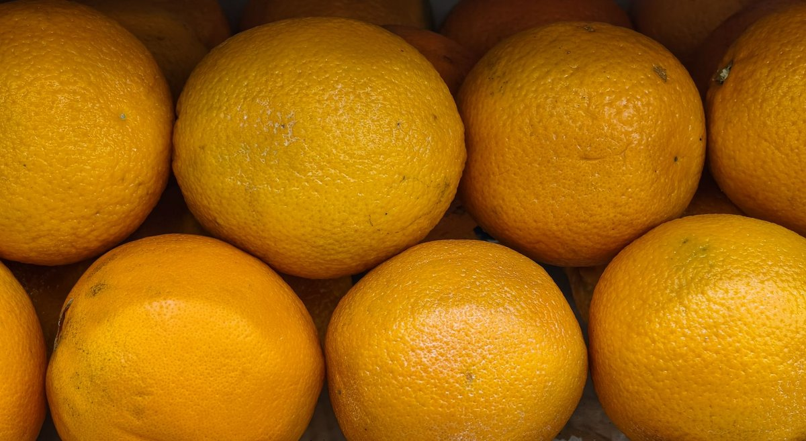

Scientists Discover A Surprising Brain Benefit Of Eating Peanuts Every Day

Key takeaways
- I used to hit that dreaded 3 PM brain fog like a brick wall every single afternoon.
- I’d stare blankly at my laptop, desperate for coffee, feeling like my executive function had completely left the building.
- Focus on: Why Your Brain Craves Daily Peanuts.
I used to hit that dreaded 3 PM brain fog like a brick wall every single afternoon. I’d stare blankly at my laptop, desperate for coffee, feeling like my executive function had completely left the building.
Then I stumbled upon a groundbreaking study that shifted how I snack forever. Scientists discover a surprising brain benefit of eating peanuts every day, proving that simple, affordable habits can dramatically sharpen cognitive performance and stabilize mood.
It turns out peanuts are packed with polyphenols and resveratrol—compounds that directly cross the blood-brain barrier to increase cerebral blood flow. For anyone fighting memory slips or afternoon anxiety, this tiny habit is a massive game-changer.
Why Your Brain Craves Daily Peanuts
Most of us associate healthy snacks with overpriced berries or rare seeds. But when scientists discover a surprising brain benefit of eating peanuts every day, it proves we don't need fancy supplements to feel sharp.
Peanuts boost short-chain fatty acids in the gut, which directly communicate with your central nervous system to lower stress hormones. If you are working on building a solid routine, check out this related healthy tip for easy daily habits.
Furthermore, the high concentration of niacin and Vitamin E acts like an internal shield for your neurons. I noticed a distinct shift in my ability to lock into deep work within just three weeks of keeping a jar on my desk.
The 2-Minute Win
Measure out a single handful (about 1 ounce) of dry-roasted, lightly salted peanuts each morning. Pair them with a glass of water right before your toughest focus block to keep your brain fueled and calm.
Magnesium: The Secret Co-Factor
While peanuts provide a fantastic baseline of healthy fats and polyphenols, pairing your dietary choices with optimal mineral intake accelerates the results. Magnesium is essential for synaptic plasticity and calming an overactive nervous system.
When my stress was at its peak, eating well wasn't quite enough to stop my mind from racing at night. Adding a gentle supplement made all the difference in relaxing my brain after a long workday.
If you struggle to unwind, I recommend checking out Magnesium Glycinate to support both your stress recovery and restful sleep. For extra support, read another practical guide on managing evening stress.
Consistent, small nutritional choices pay far greater dividends for your mental clarity than drastic weekend overhauls ever will.
Simple Ways to Stay Consistent
It is surprisingly easy to drop a good habit when life gets chaotic. I keep pre-portioned containers in my bag so I am never tempted by vending machine candy.
You can also sprinkle them over warm oatmeal or mix them into a savory evening stir-fry. If you want more inspiration, take a look at this similar wellness insight to keep your nutrition on track.
Remember that balance is key—stick to plain or lightly salted varieties rather than sugar-coated options to get the pure neurological rewards. Learn how to stay consistent with this micro-habit every day.
To dive deeper into optimizing your cognitive longevity, feel free to explore more longevity guides today.
Educational only — not medical advice.
Disclosure: This page may contain affiliate links.
Recommended Reading
- Top Longevity Foods for Optimal Brain Health & Cognitive Function: My Secret Weapons
- Daily Gratitude Practice: Boost Mood & Reduce Stress Naturally
- Eating Olive Oil Before Carbs Has A Surprising Effect On Blood Sugar
More in longevity
 longevity
longevitySix Popular Sugar Substitutes Linked To Faster Brain Aging: What to Know
Learn how six popular sugar substitutes linked to faster brain aging affect cognitive health and discover simple, real-f
Read article → longevity
longevityMediterranean Diet May Boost Tiny Proteins That Protect The Heart And Brain
New research shows the Mediterranean Diet May Boost Tiny Proteins That Protect The Heart And Brain. Learn practical ways
Read article →Related posts
longevitySix Popular Sugar Substitutes Linked To Faster Brain Aging: What to Know
Learn how six popular sugar substitutes linked to faster brain aging affect cognitive health and discover simple, real-f
Read article →longevityMediterranean Diet May Boost Tiny Proteins That Protect The Heart And Brain
New research shows the Mediterranean Diet May Boost Tiny Proteins That Protect The Heart And Brain. Learn practical ways
Read article →
longevityScientists Discover A Surprising Link Between Vitamin C And Cancer Survival
Scientists Discover A Surprising Link Between Vitamin C And Cancer Survival. Learn how high-dose IV therapies and gut he
Read article →